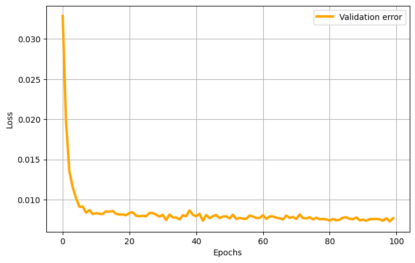

SHRED-ROM Tutorial on Double Gyre Flow#

The double gyre flow is a time-dependent model for two counter-rotating vortices (gyres) in a rectangular domain. When time is introduced via a periodic perturbation, the central dividing line between the two gyres oscillates left and right, creating a time-varying velocity field that can lead to chaotic particle trajectories. The velocity field $\mathbf{v} = [u, v]^T$ in the domain $[0, L_x] \times [0, L_y]$ and in the time interval $[0, T]$ is given by
$$ \begin{align} u(x, y, t) &= -\pi I \sin\left( \pi f(x, t) \right) \cos\left( \pi y \right) \ v(x, y, t) &= \pi I \cos\left( \pi f(x, t) \right) \sin\left( \pi y \right) \frac{\partial f}{\partial x} \end{align} $$
where $I$ is the intensity parameter, $f(x, t) = \epsilon \sin(\omega t) x^2 + (1 - 2\epsilon \sin(\omega t)) x $, $\epsilon$ and $\omega$ are the perturbation amplitude and the frequency of the oscillation, respectively.
%load_ext autoreload
%autoreload 2
# PYSHRED
from pyshred import DataManager, SHRED, SHREDEngine, LSTM_Forecaster
# IMPORT LIBRARIES
import torch
import numpy as np
import matplotlib.pyplot as plt
The autoreload extension is already loaded. To reload it, use:
%reload_ext autoreload
# DEFINE THE SYSTEM SOLVER
def double_gyre_flow(amplitude, frequency, x, y, t):
'''
Solve the double gyre flow problem
Inputs
amplitude (`float`)
frequency (`float`)
horizontal discretization (`np.array[float]`, shape: (ny,))
vertical discretization (`np.array[float]`, shape: (nx,))
time vector (`np.array[float]`, shape: (ntimes,))
Output
horizontal velocity matrix (`np.array[float]`, shape: (ntimes, nx * ny)
vertical velocity matrix (`np.array[float]`, shape: (ntimes, nx * ny)
'''
xgrid, ygrid = np.meshgrid(x, y) # spatial grid
u = np.zeros((len(t), len(x), len(y))) # horizontal velocity
v = np.zeros((len(t), len(x), len(y))) # vertical velocity
intensity = 0.1 # intensity parameter
f = lambda x,t: amplitude * np.sin(frequency * t) * x**2 + x - 2 * amplitude * np.sin(frequency * t) * x
# compute solution
for i in range(len(t)):
u[i] = (-np.pi * intensity * np.sin(np.pi * f(xgrid, t[i])) * np.cos(np.pi * ygrid)).T
v[i] = (np.pi * intensity * np.cos(np.pi * f(xgrid, t[i])) * np.sin(np.pi * ygrid) * (2 * amplitude * np.sin(frequency * t[i]) * xgrid + 1.0 - 2 * amplitude * np.sin(frequency * t[i]))).T
return u, v
# SOLVE THE SYSTEM FOR A FIXED TRANSPORT TERM
amplitude = 0.25 # amplitude
frequency = 5.0 # frequency
# spatial discretization
nx = 50
ny = 25
Lx = 2.0
Ly = 1.0
x = np.linspace(0, Lx, nx)
y = np.linspace(0, Ly, ny)
nstate = len(x) * len(y)
# temporal discretization
dt = 0.1
T = 10.0
t = np.arange(0, T + dt, dt)
ntimes = len(t)
u, v = double_gyre_flow(amplitude, frequency, x, y, t)
# SOLUTION VISUALIZATION
from ipywidgets import interact, FloatSlider
import matplotlib.patches as patches
def vorticity(u, v):
dx = Lx / nx
dy = Ly / ny
du_dy = np.gradient(u, dy, axis = 1)
dv_dx = np.gradient(v, dx, axis = 0)
return dv_dx - du_dy
def plot_solution(time):
which_time = (np.abs(t - time)).argmin()
offset = 0.1
plt.figure(figsize = (10,5))
plt.contourf(x, y, vorticity(u[which_time], v[which_time]).T, cmap = 'seismic', levels = 100)
plt.streamplot(x, y, u[which_time].T, v[which_time].T, color='black', linewidth = 1, density = 1)
plt.axis('off')
plt.axis([0 - offset, Lx + offset, 0 - offset, Ly + offset])
plt.title(f'Solution at time t = {round(time, 3)}')
plt.grid(True)
plt.gca().add_patch(patches.Rectangle((0, 0), Lx, Ly, linewidth = 5, edgecolor = 'black', facecolor = 'none'))
interact(plot_solution, time = FloatSlider(value = t[0], min = t[0], max = t[-1], step = (t[1]-t[0]), description='time', layout={'width': '400px', 'height': '50px'}));
interactive(children=(FloatSlider(value=0.0, description='time', layout=Layout(height='50px', width='400px'), …
# DATA GENERATION
amplitude_range = np.array([0.0, 0.5])
frequency_range = np.array([0.5, 2*np.pi])
# spatial discretization
nx = 50
ny = 25
Lx = 2.0
Ly = 1.0
x = np.linspace(0, Lx, nx)
y = np.linspace(0, Ly, ny)
nstate = len(x) * len(y)
# temporal discretization
dt = 0.1
T = 10.0
t = np.arange(0, T + dt, dt)
ntimes = len(t)
# training data generation
ntrajectories = 100
U = np.zeros((ntrajectories, ntimes, nx, ny))
V = np.zeros((ntrajectories, ntimes, nx, ny))
for i in range(ntrajectories):
amplitude = (amplitude_range[1] - amplitude_range[0]) * np.random.rand() + amplitude_range[0]
frequency = (frequency_range[1] - frequency_range[0]) * np.random.rand() + frequency_range[0]
U[i], V[i] = double_gyre_flow(amplitude, frequency, x, y, t)
# DATA VISUALIZATION
from ipywidgets import interact, IntSlider
def plot_data(which_trajectory, which_time):
offset = 0.1
plt.figure(figsize = (10,5))
plt.contourf(x, y, vorticity(U[which_trajectory, which_time], V[which_trajectory, which_time]).T, cmap = 'seismic', levels = 100)
plt.streamplot(x, y, U[which_trajectory, which_time].T, V[which_trajectory, which_time].T, color='black', linewidth = 1, density = 1)
plt.axis('off')
plt.axis([0 - offset, Lx + offset, 0 - offset, Ly + offset])
plt.title(f'Trajectory {which_trajectory} at time t = {round(t[which_time], 3)}')
plt.grid(True)
plt.gca().add_patch(patches.Rectangle((0, 0), Lx, Ly, linewidth = 5, edgecolor = 'black', facecolor = 'none'))
interact(plot_data, which_trajectory = IntSlider(min = 0, max = ntrajectories - 1, step = 1, description='Trajectory'), which_time = IntSlider(min = 0, max = ntimes - 1, step = 1, description='Time step'));
interactive(children=(IntSlider(value=0, description='Trajectory', max=99), IntSlider(value=0, description='Ti…
SHallow REcurrent Decoder networks-based Reduced Order Modeling (SHRED-ROM)#
Let us assume to have three sensors in the domain measuring the horizontal velocity $u(x_s,y_s,t;\epsilon, \omega)$ over time. SHRED-ROM aims to reconstruct the temporal evolution of the entire velocity $\mathbf{v}(x,y,t;\epsilon, \omega) = [u(x,y,t;\epsilon, \omega), v(x,y,t;\epsilon, \omega)]^T$ starting from the limited sensor measurements available. In general, SHRED-ROM combines a recurrent neural network (LSTM), which encodes the temporal history of sensor values in multiple parametric regimes, and a shallow decoder, which projects the LSTM prediction to the (possibly high-dimensional) state dimension. Note that, to enhance computational efficiency and memory usage, dimensionality reduction strategies (such as, e.g., POD) may be considered to compress the training snapshots.
from pyshred import ParametricDataManager, SHRED, ParametricSHREDEngine
# Initialize ParametricSHREDDataManager
manager = ParametricDataManager(
lags = 25,
train_size = 0.8,
val_size = 0.1,
test_size = 0.1,
)
manager.add_data(
data=U, # 3D array (time, lat, lon); time must be on axis 0
id="U", # Unique identifier for the dataset
random=3, # Randomly select 3 sensor locations
compress=4 # Keep original spatial resolution (no compression)
)
manager.add_data(
data=V, # 3D array (time, lat, lon); time must be on axis 0
id="V", # Unique identifier for the dataset
compress=4 # Keep original spatial resolution (no compression)
)
manager.sensor_summary_df
| data id | sensor_number | type | loc/traj | |
|---|---|---|---|---|
| 0 | U | 0 | stationary (random) | (1, 19) |
| 1 | U | 1 | stationary (random) | (14, 17) |
| 2 | U | 2 | stationary (random) | (3, 15) |
manager.sensor_measurements_df
| U-0 | U-1 | U-2 | |
|---|---|---|---|
| 0 | 0.031872 | 0.186453 | 0.045116 |
| 1 | 0.027695 | 0.190989 | 0.039657 |
| 2 | 0.024161 | 0.190413 | 0.034973 |
| 3 | 0.021824 | 0.187821 | 0.031846 |
| 4 | 0.021051 | 0.186582 | 0.030808 |
| ... | ... | ... | ... |
| 10095 | 0.019757 | 0.184086 | 0.029064 |
| 10096 | 0.020774 | 0.186092 | 0.030435 |
| 10097 | 0.021880 | 0.187904 | 0.031922 |
| 10098 | 0.023065 | 0.189416 | 0.033510 |
| 10099 | 0.024320 | 0.190526 | 0.035185 |
10100 rows × 3 columns
train_dataset, val_dataset, test_dataset= manager.prepare()
shred = SHRED(
sequence_model="LSTM",
decoder_model="MLP",
latent_forecaster=None
)
val_errors = shred.fit(
train_dataset=train_dataset,
val_dataset=val_dataset,
num_epochs=100,
patience=100,
verbose=True,
)
print('val_errors:', val_errors)
Fitting SHRED...
Epoch 1: Average training loss = 0.046301
Validation MSE (epoch 1): 0.032853
Epoch 2: Average training loss = 0.029679
Validation MSE (epoch 2): 0.019704
Epoch 3: Average training loss = 0.018568
Validation MSE (epoch 3): 0.013509
Epoch 4: Average training loss = 0.014708
Validation MSE (epoch 4): 0.011551
Epoch 5: Average training loss = 0.013780
Validation MSE (epoch 5): 0.010186
Epoch 6: Average training loss = 0.012296
Validation MSE (epoch 6): 0.009106
Epoch 7: Average training loss = 0.011431
Validation MSE (epoch 7): 0.009143
Epoch 8: Average training loss = 0.010653
Validation MSE (epoch 8): 0.008373
Epoch 9: Average training loss = 0.010423
Validation MSE (epoch 9): 0.008690
Epoch 10: Average training loss = 0.010159
Validation MSE (epoch 10): 0.008197
Epoch 11: Average training loss = 0.009842
Validation MSE (epoch 11): 0.008308
Epoch 12: Average training loss = 0.009597
Validation MSE (epoch 12): 0.008245
Epoch 13: Average training loss = 0.009303
Validation MSE (epoch 13): 0.008210
Epoch 14: Average training loss = 0.009414
Validation MSE (epoch 14): 0.008555
Epoch 15: Average training loss = 0.009362
Validation MSE (epoch 15): 0.008484
Epoch 16: Average training loss = 0.009454
Validation MSE (epoch 16): 0.008584
Epoch 17: Average training loss = 0.009214
Validation MSE (epoch 17): 0.008231
Epoch 18: Average training loss = 0.008921
Validation MSE (epoch 18): 0.008147
Epoch 19: Average training loss = 0.008887
Validation MSE (epoch 19): 0.008147
Epoch 20: Average training loss = 0.008902
Validation MSE (epoch 20): 0.008070
Epoch 21: Average training loss = 0.008982
Validation MSE (epoch 21): 0.008336
Epoch 22: Average training loss = 0.008922
Validation MSE (epoch 22): 0.008436
Epoch 23: Average training loss = 0.008832
Validation MSE (epoch 23): 0.007991
Epoch 24: Average training loss = 0.008677
Validation MSE (epoch 24): 0.007946
Epoch 25: Average training loss = 0.008744
Validation MSE (epoch 25): 0.007979
Epoch 26: Average training loss = 0.008790
Validation MSE (epoch 26): 0.007937
Epoch 27: Average training loss = 0.008743
Validation MSE (epoch 27): 0.008343
Epoch 28: Average training loss = 0.008861
Validation MSE (epoch 28): 0.008318
Epoch 29: Average training loss = 0.008655
Validation MSE (epoch 29): 0.008139
Epoch 30: Average training loss = 0.008548
Validation MSE (epoch 30): 0.007882
Epoch 31: Average training loss = 0.008727
Validation MSE (epoch 31): 0.008103
Epoch 32: Average training loss = 0.008365
Validation MSE (epoch 32): 0.007454
Epoch 33: Average training loss = 0.008825
Validation MSE (epoch 33): 0.008141
Epoch 34: Average training loss = 0.008460
Validation MSE (epoch 34): 0.007785
Epoch 35: Average training loss = 0.008650
Validation MSE (epoch 35): 0.007769
Epoch 36: Average training loss = 0.008377
Validation MSE (epoch 36): 0.007541
Epoch 37: Average training loss = 0.008511
Validation MSE (epoch 37): 0.008048
Epoch 38: Average training loss = 0.008534
Validation MSE (epoch 38): 0.007943
Epoch 39: Average training loss = 0.008836
Validation MSE (epoch 39): 0.008665
Epoch 40: Average training loss = 0.008604
Validation MSE (epoch 40): 0.008115
Epoch 41: Average training loss = 0.008376
Validation MSE (epoch 41): 0.007936
Epoch 42: Average training loss = 0.008531
Validation MSE (epoch 42): 0.008248
Epoch 43: Average training loss = 0.008207
Validation MSE (epoch 43): 0.007362
Epoch 44: Average training loss = 0.008469
Validation MSE (epoch 44): 0.008093
Epoch 45: Average training loss = 0.008288
Validation MSE (epoch 45): 0.007687
Epoch 46: Average training loss = 0.008333
Validation MSE (epoch 46): 0.007938
Epoch 47: Average training loss = 0.008568
Validation MSE (epoch 47): 0.008088
Epoch 48: Average training loss = 0.008305
Validation MSE (epoch 48): 0.007693
Epoch 49: Average training loss = 0.008289
Validation MSE (epoch 49): 0.007889
Epoch 50: Average training loss = 0.008361
Validation MSE (epoch 50): 0.007927
Epoch 51: Average training loss = 0.008386
Validation MSE (epoch 51): 0.007662
Epoch 52: Average training loss = 0.008545
Validation MSE (epoch 52): 0.008125
Epoch 53: Average training loss = 0.008233
Validation MSE (epoch 53): 0.007594
Epoch 54: Average training loss = 0.008213
Validation MSE (epoch 54): 0.007737
Epoch 55: Average training loss = 0.008208
Validation MSE (epoch 55): 0.007633
Epoch 56: Average training loss = 0.008211
Validation MSE (epoch 56): 0.007603
Epoch 57: Average training loss = 0.008446
Validation MSE (epoch 57): 0.008019
Epoch 58: Average training loss = 0.008308
Validation MSE (epoch 58): 0.007898
Epoch 59: Average training loss = 0.008269
Validation MSE (epoch 59): 0.007716
Epoch 60: Average training loss = 0.008190
Validation MSE (epoch 60): 0.007724
Epoch 61: Average training loss = 0.008345
Validation MSE (epoch 61): 0.008059
Epoch 62: Average training loss = 0.008210
Validation MSE (epoch 62): 0.007607
Epoch 63: Average training loss = 0.008304
Validation MSE (epoch 63): 0.007912
Epoch 64: Average training loss = 0.008449
Validation MSE (epoch 64): 0.007902
Epoch 65: Average training loss = 0.008255
Validation MSE (epoch 65): 0.007748
Epoch 66: Average training loss = 0.008089
Validation MSE (epoch 66): 0.007680
Epoch 67: Average training loss = 0.008126
Validation MSE (epoch 67): 0.007523
Epoch 68: Average training loss = 0.008330
Validation MSE (epoch 68): 0.008018
Epoch 69: Average training loss = 0.008365
Validation MSE (epoch 69): 0.007731
Epoch 70: Average training loss = 0.008154
Validation MSE (epoch 70): 0.007834
Epoch 71: Average training loss = 0.008118
Validation MSE (epoch 71): 0.007602
Epoch 72: Average training loss = 0.008431
Validation MSE (epoch 72): 0.008149
Epoch 73: Average training loss = 0.008413
Validation MSE (epoch 73): 0.007699
Epoch 74: Average training loss = 0.008252
Validation MSE (epoch 74): 0.007670
Epoch 75: Average training loss = 0.008249
Validation MSE (epoch 75): 0.007814
Epoch 76: Average training loss = 0.008081
Validation MSE (epoch 76): 0.007537
Epoch 77: Average training loss = 0.008249
Validation MSE (epoch 77): 0.007756
Epoch 78: Average training loss = 0.008177
Validation MSE (epoch 78): 0.007556
Epoch 79: Average training loss = 0.008083
Validation MSE (epoch 79): 0.007594
Epoch 80: Average training loss = 0.008275
Validation MSE (epoch 80): 0.007543
Epoch 81: Average training loss = 0.008042
Validation MSE (epoch 81): 0.007389
Epoch 82: Average training loss = 0.008140
Validation MSE (epoch 82): 0.007586
Epoch 83: Average training loss = 0.008017
Validation MSE (epoch 83): 0.007417
Epoch 84: Average training loss = 0.008034
Validation MSE (epoch 84): 0.007501
Epoch 85: Average training loss = 0.008170
Validation MSE (epoch 85): 0.007769
Epoch 86: Average training loss = 0.008278
Validation MSE (epoch 86): 0.007791
Epoch 87: Average training loss = 0.008161
Validation MSE (epoch 87): 0.007608
Epoch 88: Average training loss = 0.008055
Validation MSE (epoch 88): 0.007577
Epoch 89: Average training loss = 0.008377
Validation MSE (epoch 89): 0.007784
Epoch 90: Average training loss = 0.008147
Validation MSE (epoch 90): 0.007418
Epoch 91: Average training loss = 0.008123
Validation MSE (epoch 91): 0.007506
Epoch 92: Average training loss = 0.008042
Validation MSE (epoch 92): 0.007367
Epoch 93: Average training loss = 0.008091
Validation MSE (epoch 93): 0.007578
Epoch 94: Average training loss = 0.008084
Validation MSE (epoch 94): 0.007582
Epoch 95: Average training loss = 0.008108
Validation MSE (epoch 95): 0.007593
Epoch 96: Average training loss = 0.008106
Validation MSE (epoch 96): 0.007545
Epoch 97: Average training loss = 0.007964
Validation MSE (epoch 97): 0.007376
Epoch 98: Average training loss = 0.008246
Validation MSE (epoch 98): 0.007686
Epoch 99: Average training loss = 0.007993
Validation MSE (epoch 99): 0.007285
Epoch 100: Average training loss = 0.008133
Validation MSE (epoch 100): 0.007690
val_errors: [0.03285329 0.01970415 0.01350894 0.01155105 0.01018647 0.00910593
0.00914295 0.00837307 0.00869035 0.0081968 0.00830795 0.00824511
0.00820952 0.00855513 0.00848442 0.00858354 0.00823117 0.00814745
0.00814694 0.00806998 0.00833583 0.00843555 0.00799054 0.00794567
0.00797862 0.00793684 0.00834331 0.00831771 0.00813874 0.00788231
0.00810261 0.00745431 0.00814114 0.0077851 0.00776922 0.00754078
0.00804773 0.00794328 0.00866543 0.00811492 0.00793639 0.00824833
0.0073621 0.00809261 0.00768704 0.00793821 0.00808841 0.00769287
0.00788904 0.00792749 0.0076617 0.0081252 0.00759394 0.00773652
0.00763341 0.00760348 0.00801937 0.00789826 0.00771582 0.00772356
0.00805864 0.00760692 0.00791249 0.00790189 0.00774756 0.00767996
0.00752273 0.0080177 0.00773051 0.00783446 0.00760188 0.00814937
0.00769859 0.0076704 0.00781398 0.00753727 0.00775564 0.00755581
0.00759447 0.00754326 0.00738913 0.00758597 0.00741673 0.00750099
0.0077693 0.00779133 0.00760835 0.00757683 0.00778388 0.00741831
0.0075057 0.00736659 0.00757792 0.00758173 0.0075934 0.00754485
0.00737582 0.0076863 0.00728468 0.00769037]
# TRAINING HISTORY VISUALIZATION
plt.figure(figsize = (8,5))
# plt.plot(train_errors, 'k', linewidth = 3, label = 'Training error')
plt.plot(val_errors, 'orange', linewidth = 3, label = 'Validation error')
plt.xlabel('Epochs')
plt.ylabel('Loss')
plt.legend()
plt.grid(True)

train_mse = shred.evaluate(dataset=train_dataset)
val_mse = shred.evaluate(dataset=val_dataset)
test_mse = shred.evaluate(dataset=test_dataset)
print(f"Train MSE: {train_mse:.3f}")
print(f"Val MSE: {val_mse:.3f}")
print(f"Test MSE: {test_mse:.3f}")
Train MSE: 0.008
Val MSE: 0.008
Test MSE: 0.008
engine = ParametricSHREDEngine(manager, shred)
# obtain latent space of test sensor measurements
test_latent_from_sensors = engine.sensor_to_latent(manager.test_sensor_measurements)
# decode latent space generated from sensor measurements (generated using engine.sensor_to_latent())
test_reconstruction = engine.decode(test_latent_from_sensors)
Utest_hat = test_reconstruction['U']
Vtest_hat = test_reconstruction['V']
Utest = U[manager.test_indices]
Vtest = V[manager.test_indices]
# SHRED RECONSTRUCTION VISUALIZATION
from ipywidgets import interact, IntSlider
Utest_hat = Utest_hat.reshape(-1, ntimes, nx, ny)
Utest = Utest.reshape(-1, ntimes, nx, ny)
Vtest_hat = Vtest_hat.reshape(-1, ntimes, nx, ny)
Vtest = Vtest.reshape(-1, ntimes, nx, ny)
def plot_shred_reconstruction(which_test_trajectory, which_time):
offset = 0.1
plt.figure(figsize = (20,5))
plt.subplot(1, 2, 1)
plt.contourf(x, y, vorticity(Utest[which_test_trajectory, which_time], Vtest[which_test_trajectory, which_time]).T, cmap = 'seismic', levels = 100)
plt.streamplot(x, y, Utest[which_test_trajectory, which_time].T, Vtest[which_test_trajectory, which_time].T, color='black', linewidth = 1, density = 1)
plt.axis('off')
plt.axis([0 - offset, Lx + offset, 0 - offset, Ly + offset])
plt.title(f'Test case {which_test_trajectory} at time t = {round(t[which_time], 3)}')
plt.grid(True)
plt.gca().add_patch(patches.Rectangle((0, 0), Lx, Ly, linewidth = 5, edgecolor = 'black', facecolor = 'none'))
# for k in range(3):
# plt.plot(sensors_coordinates[0, k], sensors_coordinates[1, k], 'o', mfc = 'magenta', mec = 'black', ms = 8, mew = 1.5)
plt.subplot(1, 2, 2)
plt.contourf(x, y, vorticity(Utest_hat[which_test_trajectory, which_time], Vtest_hat[which_test_trajectory, which_time]).T, cmap = 'seismic', levels = 100)
plt.streamplot(x, y, Utest_hat[which_test_trajectory, which_time].T, Vtest_hat[which_test_trajectory, which_time].T, color='black', linewidth = 1, density = 1)
plt.axis('off')
plt.axis([0 - offset, Lx + offset, 0 - offset, Ly + offset])
plt.title(f'SHRED reconstruction at time t = {round(t[which_time], 3)}')
plt.grid(True)
plt.gca().add_patch(patches.Rectangle((0, 0), Lx, Ly, linewidth = 5, edgecolor = 'black', facecolor = 'none'))
# for k in range(nsensors):
# plt.plot(sensors_coordinates[0, k], sensors_coordinates[1, k], 'o', mfc = 'magenta', mec = 'black', ms = 8, mew = 1.5)
interact(plot_shred_reconstruction, which_test_trajectory = IntSlider(value = 0, min = 0, max = len(Utest) - 1, description='Test case'), which_time = IntSlider(min = 0, max = ntimes - 1, step = 1, description='Time step'));
interactive(children=(IntSlider(value=0, description='Test case', max=9), IntSlider(value=0, description='Time…